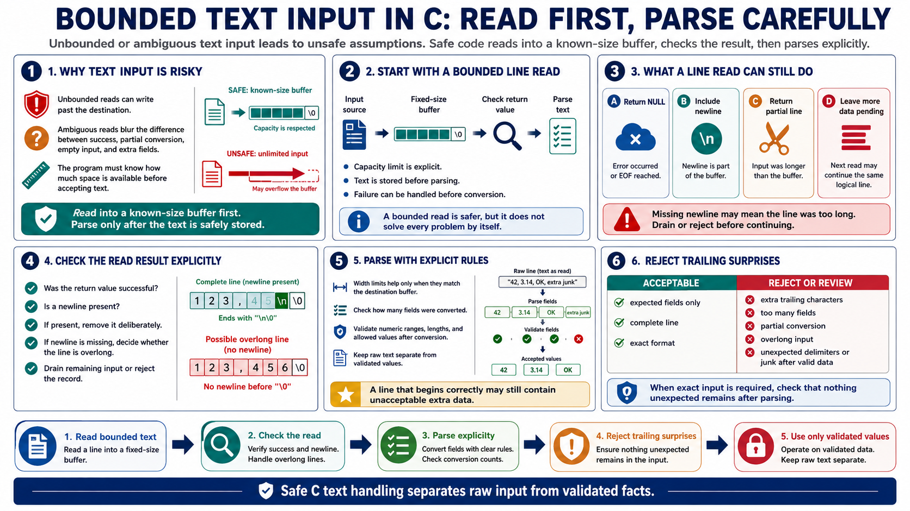

Safer Text Input Patterns
Connecting to LMS... Progress: in progress

Narration
Text input becomes risky when the program uses functions or formats that do not clearly limit how much data can be written. Unbounded reads are dangerous because the caller cannot prove that the destination has enough room. Ambiguous reads are also dangerous because they make it hard to distinguish a successful conversion from a partial conversion, an empty line, an overlong line, or input with unexpected extra fields. The safer pattern is to read into a known-size buffer, check the result, and only then parse the stored text.
A bounded line-read pattern, such as an fgets-style approach, gives the program a capacity limit, but it does not solve every problem by itself. The function may return null on error or end of file. It may include the newline when one was read. It may return a partial line when the input is longer than the buffer. Secure code checks the return value, removes the newline only when it is actually present, and treats a missing newline as a possible overlong line that must be drained or rejected before the next read.
Parsing should also be explicit. Width limits in formatted parsing are useful when they match the destination buffer, but the program still needs to check how many fields were converted and whether the remaining input contains unexpected characters. A line that begins correctly but continues with extra data may not be acceptable. Avoid assuming that input is well formed just because a simple case worked. Read bounded text, check the read, check the parse, reject trailing surprises when the format requires exact input, and keep raw input separate from validated values.